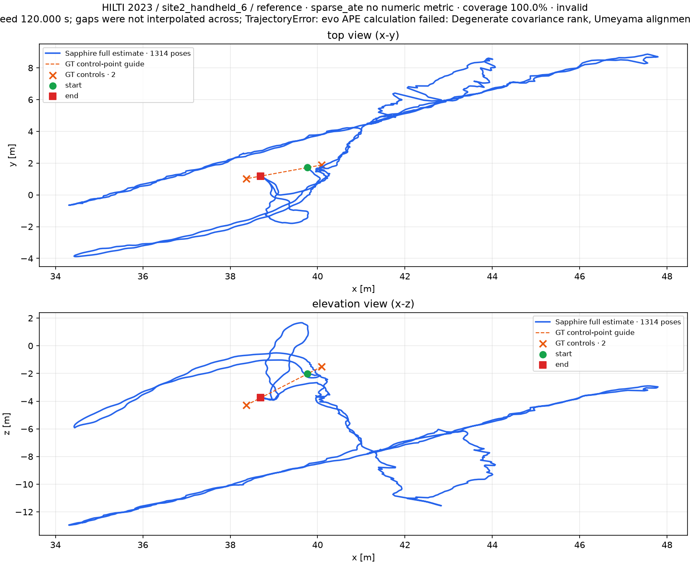
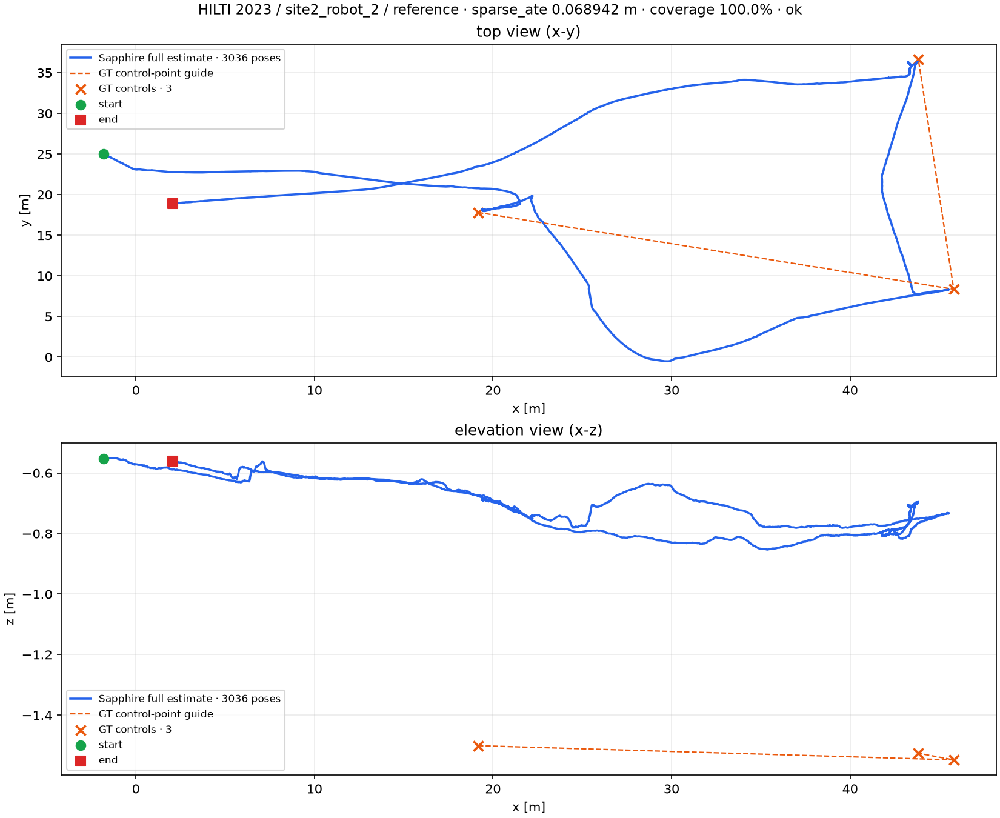

evalio ATE overview

Generated from run 20261108T153222Z. All replay used rate 1.0 without RViz.
| Aggregate | Runs | Current mean | Current median | Baseline runs | Baseline mean | Baseline median |
|---|---|---|---|---|---|---|
| HILTI 2022 complete-coverage sparse ATE | 8 | 0.3442 | 0.0442 | 8 | 0.0551 | 0.0420 |
| HILTI 2023 Site 1 handheld | 5 | 0.1359 | 0.0588 | 5 | 0.0749 | 0.0618 |
| HILTI 2023 all valid | 7 | 2.2406 | 0.0689 | 6 | 2.4476 | 0.0758 |
| S3E headline continuous ATE | 18 | 1.1865 | 0.9452 | 18 | 2.7547 | 1.2765 |
| S3E all continuous ATE | 24 | 3.0201 | 0.9452 | 23 | 8.7738 | 1.3289 |
| S3E Laboratory endpoint | 12 | 199.4056 | 104.4437 | 12 | 201.1823 | 104.4493 |
| Newer College continuous ATE | 5 | 0.2377 | 0.1562 | 5 | 0.2889 | 0.2847 |
0.0551 m in the matched baseline to 0.3442 m. The full replay also leaves three incomplete-coverage trajectories and one trajectory that cannot support SE(3) alignment, so this parameter set is not robust across HILTI.0.0749 m to 0.1359 m, while its median changed from 0.0618 m to 0.0588 m: the mean regressed and the distribution has a long tail.2.7547 m to 1.1865 m, and median improved from 1.2765 m to 0.9452 m.0.2889 m to 0.2377 m, and median improved from 0.2847 m to 0.1562 m.0.0689 m result.Detailed per-sequence deltas are in the unified-parameter regression table.
A separate evalio 0.6.1 run (evalio_20261107) compares
KISS-ICP, DLIO, and GenZ-ICP on the
seven local recordings with built-in adapters. Of 21 combinations, 17 completed;
four GenZ-ICP runs stopped part-way and retain partial trajectories. HILTI 2023
and S3E have no evalio 0.6.1 adapter.
Saved external trajectories were re-associated at 0.1 s and re-evaluated with SE(3) Umeyama alignment, no scale correction. The unchanged Sapphire row is from the 2026-11-06 benchmark; no new side-by-side container run was performed for the 2026-11-08 replay.
| Pipeline | Version | Complete runs | Mean ATE (m) | Median ATE (m) |
|---|---|---|---|---|
| Sapphire | 2026-11-06 benchmark | 5/5 | 0.263176 | 0.158747 |
| DLIO | 1.1.1 | 5/5 | 0.221192 | 0.164614 |
| KISS-ICP | 1.3.0 | 5/5 | 0.540744 | 0.583880 |
| GenZ-ICP | 0.3.2 | 1/5 | 0.133740 | 0.133740 |
GenZ-ICP completed only quad_with_dynamics; its one-run mean is
not a five-sequence comparison. Partial values are excluded from aggregates.
evalio uses nearest-timestamp association and first-pose alignment. These values cannot be ranked together with the SE(3) Umeyama tables.
| Dataset | Pipeline | Complete runs | Mean ATE (m) | Median ATE (m) |
|---|---|---|---|---|
| HILTI 2022 | DLIO | 2/2 | 16.817070 | 16.817070 |
| HILTI 2022 | GenZ-ICP | 2/2 | 10.192442 | 10.192442 |
| HILTI 2022 | KISS-ICP | 2/2 | 10.552516 | 10.552516 |
| Newer College 2020 | DLIO | 5/5 | 2.686118 | 2.831087 |
| Newer College 2020 | GenZ-ICP | 1/5 | 0.181977 | 0.181977 |
| Newer College 2020 | KISS-ICP | 5/5 | 1.028167 | 0.803811 |
The SE(3) column applies Sapphire's protocol to saved Newer College
trajectories. partial values cover only the saved prefix of a
failed run. HILTI uses dense IMU GT in evalio, so sparse-control SE(3) values
are not reported.
| Dataset | Sequence | Pipeline | Status | Pose coverage | evalio ATE (m) | SE(3) ATE (m) | Plot |
|---|---|---|---|---|---|---|---|
| HILTI 2022 | attic_to_upper_gallery_2 | DLIO | complete | 100.0% | 17.125 | — | plot |
| HILTI 2022 | attic_to_upper_gallery_2 | GenZ-ICP | complete | 100.0% | 20.191 | — | plot |
| HILTI 2022 | attic_to_upper_gallery_2 | KISS-ICP | complete | 100.0% | 12.445 | — | plot |
| HILTI 2022 | basement_2 | DLIO | complete | 100.0% | 16.509 | — | plot |
| HILTI 2022 | basement_2 | GenZ-ICP | complete | 100.0% | 0.194 | — | plot |
| HILTI 2022 | basement_2 | KISS-ICP | complete | 100.0% | 8.660 | — | plot |
| Newer College 2020 | dynamic_spinning | DLIO | complete | 100.0% | 0.115 | 0.095 | plot |
| Newer College 2020 | dynamic_spinning | GenZ-ICP | fail; 557/1202 poses | 46.3% | 11.529 | 9.426 partial | plot |
| Newer College 2020 | dynamic_spinning | KISS-ICP | complete | 100.0% | 0.804 | 0.584 | plot |
| Newer College 2020 | long_experiment | DLIO | complete | 100.0% | 2.831 | 0.377 | plot |
| Newer College 2020 | long_experiment | GenZ-ICP | fail; 13088/26560 poses | 49.3% | 0.979 | 0.335 partial | plot |
| Newer College 2020 | long_experiment | KISS-ICP | complete | 100.0% | 1.924 | 1.057 | plot |
| Newer College 2020 | parkland_mound | DLIO | complete | 100.0% | 4.013 | 0.165 | plot |
| Newer College 2020 | parkland_mound | GenZ-ICP | fail; 1630/5009 poses | 32.5% | 1.517 | 1.459 partial | plot |
| Newer College 2020 | parkland_mound | KISS-ICP | complete | 100.0% | 0.505 | 0.279 | plot |
| Newer College 2020 | quad_with_dynamics | DLIO | complete | 100.0% | 1.109 | 0.123 | plot |
| Newer College 2020 | quad_with_dynamics | GenZ-ICP | complete | 100.0% | 0.182 | 0.134 | plot |
| Newer College 2020 | quad_with_dynamics | KISS-ICP | complete | 100.0% | 0.247 | 0.187 | plot |
| Newer College 2020 | short_experiment | DLIO | complete | 100.0% | 5.363 | 0.346 | plot |
| Newer College 2020 | short_experiment | GenZ-ICP | fail; 6083/15302 poses | 39.8% | 1.094 | 0.299 partial | plot |
| Newer College 2020 | short_experiment | KISS-ICP | complete | 100.0% | 1.661 | 0.597 | plot |
Download complete evalio result CSV · Download recomputed Newer College SE(3) CSV · Run manifest · evalio configuration
The overview includes Sapphire under the same evalio-native protocol: nearest-timestamp association and first-pose alignment against dense evalio GT. Sapphire's raw full trajectories are transformed into each dataset's IMU frame first. This figure is separate from the SE(3) table above. Only complete runs enter the overview; failed GenZ-ICP prefixes remain in the per-sequence table. Download Sapphire-native CSV.


| Dataset | Sequence | Agent | Metric | Result (m) | Coverage | Status | In headline | Plot |
|---|---|---|---|---|---|---|---|---|
| HILTI 2022 | exp01_construction_ground_level | reference | sparse ATE | 0.016 | 13/13 | ok | yes | [plot](trajectories/hilti_2022_exp01_construction_ground_level.png) |
| HILTI 2022 | exp02_construction_multilevel | reference | sparse ATE | 0.392 | 22/22 | ok | yes | [plot](trajectories/hilti_2022_exp02_construction_multilevel.png) |
| HILTI 2022 | exp03_construction_stairs | reference | sparse ATE | 1.449 | 17/17 | ok | yes | [plot](trajectories/hilti_2022_exp03_construction_stairs.png) |
| HILTI 2022 | exp04_construction_upper_level | reference | sparse ATE | 0.033 | 7/7 | ok | yes | [plot](trajectories/hilti_2022_exp04_construction_upper_level.png) |
| HILTI 2022 | exp05_construction_upper_level_2 | reference | sparse ATE | 0.012 | 6/6 | ok | yes | [plot](trajectories/hilti_2022_exp05_construction_upper_level_2.png) |
| HILTI 2022 | exp06_construction_upper_level_3 | reference | sparse ATE | 0.028 | 7/7 | ok | yes | [plot](trajectories/hilti_2022_exp06_construction_upper_level_3.png) |
| HILTI 2022 | exp07_long_corridor | reference | sparse ATE | 0.056 | 6/6 | ok | yes | [plot](trajectories/hilti_2022_exp07_long_corridor.png) |
| HILTI 2022 | exp09_cupola | reference | sparse ATE | 0.600 | 5/16 | incomplete_coverage | no | [plot](trajectories/hilti_2022_exp09_cupola.png) |
| HILTI 2022 | exp10_cupola_2 | reference | sparse ATE | 4.243 | 3/14 | incomplete_coverage | no | [plot](trajectories/hilti_2022_exp10_cupola_2.png) |
| HILTI 2022 | exp11_lower_gallery | reference | sparse ATE | 1.455 | 4/5 | incomplete_coverage | no | [plot](trajectories/hilti_2022_exp11_lower_gallery.png) |
| HILTI 2022 | exp14_basement_2 | reference | sparse ATE | 0.766 | 4/4 | ok | yes | [plot](trajectories/hilti_2022_exp14_basement_2.png) |
| HILTI 2022 | exp16_attic_to_upper_gallery_2 | reference | sparse ATE | — | — | invalid | no | [plot](trajectories/hilti_2022_exp16_attic_to_upper_gallery_2.png) |
| HILTI 2023 | Site 1 · Handheld 1 | reference | sparse ATE | 0.022 | 4/4 | ok | yes | [plot](trajectories/hilti_site1_handheld_1.png) |
| HILTI 2023 | Site 1 · Handheld 2 | reference | sparse ATE | 0.052 | 4/4 | ok | yes | [plot](trajectories/hilti_site1_handheld_2.png) |
| HILTI 2023 | Site 1 · Handheld 3 | reference | sparse ATE | 0.133 | 4/4 | ok | yes | [plot](trajectories/hilti_site1_handheld_3.png) |
| HILTI 2023 | Site 1 · Handheld 4 | reference | sparse ATE | 0.059 | 3/3 | warning | yes | [plot](trajectories/hilti_site1_handheld_4.png) |
| HILTI 2023 | Site 1 · Handheld 5 | reference | sparse ATE | 0.414 | 3/3 | ok | yes | [plot](trajectories/hilti_site1_handheld_5.png) |
| HILTI 2023 | Site 2 · Handheld 4 | reference | sparse ATE | — | 2/2 | invalid | no | [plot](trajectories/hilti_site2_handheld_4.png) |
| HILTI 2023 | Site 2 · Handheld 5 | reference | sparse ATE | 14.936 | 4/4 | ok | no | [plot](trajectories/hilti_site2_handheld_5.png) |
| HILTI 2023 | Site 2 · Handheld 6 | reference | sparse ATE | — | 2/2 | invalid | no | [plot](trajectories/hilti_site2_handheld_6.png) |
| HILTI 2023 | Site 2 · Robot 2 | reference | sparse ATE | 0.069 | 3/3 | ok | no | [plot](trajectories/hilti_site2_robot_2.png) |
| S3E | Campus Road 3 | alpha | ATE | 0.822 | 7017/61352 | ok | yes | [plot](trajectories/s3e_campus_road_3_alpha.png) |
| S3E | Campus Road 3 | bob | ATE | 1.823 | 7180/54175 | ok | yes | [plot](trajectories/s3e_campus_road_3_bob.png) |
| S3E | Campus Road 3 | carol | ATE | 0.919 | 7504/63771 | ok | yes | [plot](trajectories/s3e_campus_road_3_carol.png) |
| S3E | Dormitory 1 | alpha | ATE | 0.591 | 466/508 | ok | yes | [plot](trajectories/s3e_dormitory_1_alpha.png) |
| S3E | Dormitory 1 | bob | ATE | 1.401 | 558/626 | ok | yes | [plot](trajectories/s3e_dormitory_1_bob.png) |
| S3E | Dormitory 1 | carol | ATE | 0.806 | 465/479 | warning | yes | [plot](trajectories/s3e_dormitory_1_carol.png) |
| S3E | Laboratory 1 | alpha | endpoint | 928.355 | 2/2 | warning | no | [plot](trajectories/s3e_laboratory_1_alpha.png) |
| S3E | Laboratory 1 | bob | endpoint | 97.289 | 2/2 | warning | no | [plot](trajectories/s3e_laboratory_1_bob.png) |
| S3E | Laboratory 1 | carol | endpoint | 158.375 | 2/2 | warning | no | [plot](trajectories/s3e_laboratory_1_carol.png) |
| S3E | Laboratory 2 | alpha | endpoint | 389.872 | 2/2 | warning | no | [plot](trajectories/s3e_laboratory_2_alpha.png) |
| S3E | Laboratory 2 | bob | endpoint | 86.446 | 2/2 | warning | no | [plot](trajectories/s3e_laboratory_2_bob.png) |
| S3E | Laboratory 2 | carol | endpoint | 111.598 | 2/2 | warning | no | [plot](trajectories/s3e_laboratory_2_carol.png) |
| S3E | Laboratory 3 | alpha | endpoint | 61.695 | 2/2 | warning | no | [plot](trajectories/s3e_laboratory_3_alpha.png) |
| S3E | Laboratory 3 | bob | endpoint | 14.130 | 2/2 | warning | no | [plot](trajectories/s3e_laboratory_3_bob.png) |
| S3E | Laboratory 3 | carol | endpoint | 138.720 | 2/2 | warning | no | [plot](trajectories/s3e_laboratory_3_carol.png) |
| S3E | Laboratory 4 | alpha | endpoint | 262.521 | 2/2 | warning | no | [plot](trajectories/s3e_laboratory_4_alpha.png) |
| S3E | Laboratory 4 | bob | endpoint | 71.522 | 2/2 | warning | no | [plot](trajectories/s3e_laboratory_4_bob.png) |
| S3E | Laboratory 4 | carol | endpoint | 72.346 | 2/2 | warning | no | [plot](trajectories/s3e_laboratory_4_carol.png) |
| S3E | Library 1 | alpha | ATE | 0.965 | 361/400 | warning | yes | [plot](trajectories/s3e_library_1_alpha.png) |
| S3E | Library 1 | bob | ATE | 1.646 | 369/379 | warning | yes | [plot](trajectories/s3e_library_1_bob.png) |
| S3E | Library 1 | carol | ATE | 1.328 | 354/377 | warning | yes | [plot](trajectories/s3e_library_1_carol.png) |
| S3E | Library 2 | alpha | ATE | 0.925 | 3471/34555 | ok | yes | [plot](trajectories/s3e_library_2_alpha.png) |
| S3E | Library 2 | bob | ATE | 0.897 | 4180/30843 | ok | yes | [plot](trajectories/s3e_library_2_bob.png) |
| S3E | Library 2 | carol | ATE | 0.918 | 3665/30840 | ok | yes | [plot](trajectories/s3e_library_2_carol.png) |
| S3E | Square 1 | alpha | ATE | 1.174 | 325/384 | warning | yes | [plot](trajectories/s3e_square_1_alpha.png) |
| S3E | Square 1 | bob | ATE | 0.784 | 446/456 | ok | yes | [plot](trajectories/s3e_square_1_bob.png) |
| S3E | Square 1 | carol | ATE | 0.596 | 330/338 | warning | yes | [plot](trajectories/s3e_square_1_carol.png) |
| S3E | Square 3 | alpha | ATE | 1.936 | 2811/40657 | ok | yes | [plot](trajectories/s3e_square_3_alpha.png) |
| S3E | Square 3 | bob | ATE | 2.063 | 3440/26149 | ok | yes | [plot](trajectories/s3e_square_3_bob.png) |
| S3E | Square 3 | carol | ATE | 1.762 | 3010/32969 | ok | yes | [plot](trajectories/s3e_square_3_carol.png) |
| S3E | Teaching Building 1 | alpha | ATE | 0.157 | 135/139 | warning | no | [plot](trajectories/s3e_teaching_building_1_alpha.png) |
| S3E | Teaching Building 1 | bob | ATE | 0.920 | 113/119 | warning | no | [plot](trajectories/s3e_teaching_building_1_bob.png) |
| S3E | Teaching Building 1 | carol | ATE | 0.572 | 143/148 | warning | no | [plot](trajectories/s3e_teaching_building_1_carol.png) |
| S3E | Tunnel 1 | alpha | ATE | 3.781 | 3140/29868 | ok | no | [plot](trajectories/s3e_tunnel_1_alpha.png) |
| S3E | Tunnel 1 | bob | ATE | 42.415 | 2777/26337 | ok | no | [plot](trajectories/s3e_tunnel_1_bob.png) |
| S3E | Tunnel 1 | carol | ATE | 3.281 | 3595/28955 | ok | no | [plot](trajectories/s3e_tunnel_1_carol.png) |
| Newer College 2020 | Short Experiment | reference | ATE | 0.415 | 11427/15301 | ok | yes | [plot](trajectories/newer_college_01_short_experiment.png) |
| Newer College 2020 | Long Experiment | reference | ATE | 0.397 | 19688/26559 | ok | yes | [plot](trajectories/newer_college_02_long_experiment.png) |
| Newer College 2020 | Quad with Dynamics | reference | ATE | 0.124 | 2891/3954 | ok | yes | [plot](trajectories/newer_college_05_quad_with_dynamics.png) |
| Newer College 2020 | Dynamic Spinning | reference | ATE | 0.096 | 1149/1197 | ok | yes | [plot](trajectories/newer_college_06_dynamic_spinning.png) |
| Newer College 2020 | Parkland Mound | reference | ATE | 0.156 | 3691/5006 | ok | yes | [plot](trajectories/newer_college_07_parkland_mound.png) |



